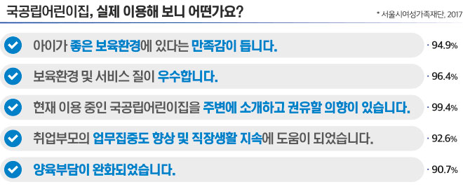

국/공립 어린이집
홈 > 국/공립 어린이집 > 국/공립 어린이집이란?
국 / 공립 어린이집이란?
국가나 지방자치 단체가 설치/운영하는 어린이집입니다.
국공립어린이집은 어떻게 설치될까요?
공동주택을 중심으로 국공립어린이집을 신규 설치하거나 기존 민간어린이집을 매입, 리모델링 등 국공립으로 전환하고 있습니다.
기존 민간어린이집은 어떻게 국공립으로 전환될 수 있나요.
구·군에서 민간어린이집 원장과 사전 협의한 후 민간어린이집을 폐지하고, 부지, 건물에 대한 무상임대계약을 체결한 후 리모델링 등을 거쳐 국공립어린이집으로 설치인가하여 전환하고 있습니다.
국공립어린이집을 이용하려면 어떻게 해야 하나요?
입소희망 국공립 어린이집에 입소대기 등록을 하고, 확정시 이용하시면 됩니다.
※ 입소대기 신청안내(임신육아종합포털 아이사랑 )
※ 입소대기 신청안내(임신육아종합포털 아이사랑 )
국공립어린이집 이용 학부모의 후기 “국공립어린이집을 추천합니다”

우리 아파트에 국공립어린이집이 생긴다면?
- 입주자 자녀는 국공립어린이집 1순위로 입소가능(최대 70%)
- 국공립어린이집 시설 유지보수는 지자체가 책임·관리
- 국공립어린이집 위탁자는 지자체가 직접 결정 *단, 민간어린이집 국공립 전환 시 기존 원장의 초기 운영권 보장
- 무상임대를 통한 지자체 직접 설치로 초기 투자비용, 보증금, 임대료가 발생 하지 않아 안정적인 보육가능
문의사항
- 구군별
- 중구
- 서구
- 동구
- 영도구
- 부산진구
- 동래구
- 남구
- 북구
- 소속
- 가족행복과
- 가족행복과
- 행복가정과
- 복지정책과
- 여성가족과
- 주민복지과
- 여성아동과
- 주민복지과
- 연락처
- 051-600-4355
- 051-240-4362
- 051-440-4862
- 051-419-4348
- 051-605-4374
- 051-550-4894
- 051-607-4344
- 051-309-4352
- 구군별
- 해운대구
- 사하구
- 금정구
- 강서구
- 연제구
- 수영구
- 사상구
- 기장군
- 소속
- 가족복지과
- 여성가족과
- 여성가족과
- 주민복지과
- 가정복지과
- 가족행복과
- 아동청소년과
- 인재양성과
- 연락처
- 051-749-4367
- 051-220-5642
- 051-519-4372
- 051-970-2322
- 051-665-4652
- 051-610-4322
- 051-310-4722
- 051-709-4642